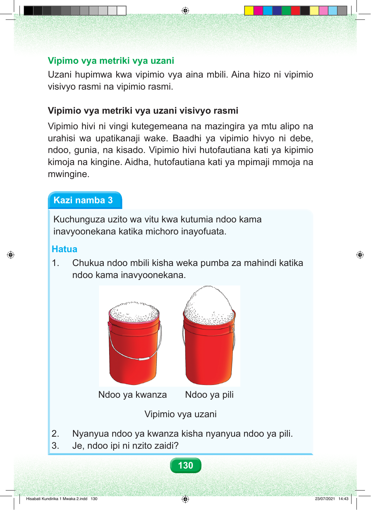

Vipimo vya metriki vya uzani Uzani hupimwa kwa vipimio vya aina mbili. Aina hizo ni vipimio visivyo rasmi na vipimio rasmi. Vipimio vya metriki vya uzani visivyo rasmi Vipimio hivi ni vingi kutegemeana na mazingira ya mtu alipo na urahisi wa upatikanaji wake. Baadhi ya vipimio hivyo ni debe, ndoo, gunia, na kisado. Vipimio hivi hutofautiana kati ya kipimio kimoja na kingine. Aidha, hutofautiana kati ya mpimaji mmoja na mwingine. Kazi namba 3 Kuchunguza uzito wa vitu kwa kutumia ndoo kama inavyoonekana katika michoro inayofuata. Hatua 1. Chukua ndoo mbili kisha weka pumba za mahindi katika ndoo kama inavyoonekana. Ndoo ya kwanza Ndoo ya pili Vipimio vya uzani 2. Nyanyua ndoo ya kwanza kisha nyanyua ndoo ya pili. 3. Je, ndoo ipi ni nzito zaidi? 130 Hisabati Kundirika 1 Mwaka 2.indd 130 23/07/2021 14:43